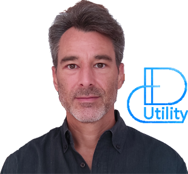

| Enthousiaste en matière de transformation numérique valorisant les initiatives innovantes. |
|
|
|
|
|
|
|  |
Bienvenue Le but du site Web DCUtility est de vous donner une brève description de moi-même et de partager avec vous certains de mes intérêts personnelles en informatique. Contexte La toute première fois que mes doigts ont touché un clavier c'était pour déplacer une petite tortue avec le langage de programmation Logo. Mes premières âmes en informatique ont débuté avec l'avènement du micro-ordinateur TRS 80. À cette époque, à peine âgé de 7 ans, j'occupais déjà la majorité de mon temps libre soit à jouer dehors ou bien à retaper d'interminables pages de codes sources en BASIC. La majorité du temps passé à écrire ce code était suivi de longues heures de débogage dans le seul but de pouvoir jouer à des jeux. J'appelle cette période mon éveil informatique. |
Manifeste
J'ai débuté à partir des méthodes de développement (RAD) et (XP), puis évoluer avec les approches Agile-SCRUM et Lean-ITIL.
On peut facilement me considérer comme étant un évangéliste DevOps des meilleures pratiques dans le domaine des technologies de l'information.
J'aime rassembler les gens afin qu'ils puissent collaborer et partager leurs connaissances respectives de manière utile et efficiente.
Mon objectif ultime, en cette ère de transformation numérique, est de valoriser les initiatives innovantes par le biais de l'approche Lean-Agile (SAFe).
Aphorisme préféré
« If it ain't broke, don't fix it! »
« Do it!, Do it right!, Do it right now! »
Demande d'information